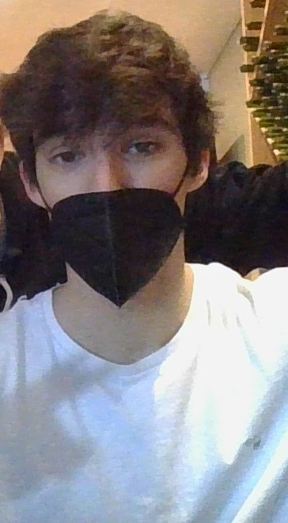

Marc Vilalta

Summary
I am a pasionate worker currently coursing an Engineering Grade at the Univeritat Politectnica de Catalunya. Since 3 years old I have been involved in sports, specifically skiing. Achiving dream goals like Spanish champion u16 and u14 as during my high performance athlete career.
Education
- Industrial Engineering at UPC (current)
- Technical Instructor of skiers grade 1
Skills
- Ambitious
- Resilience
- Fresh ideas and concepts
- Team coworking
- Idioms:
- Catalan
- Spanish
- English (medium level)
Awards and Certifications
- Technical Ski Instructor
- Spanish and Catalan global champion skier u14/u16 (some more awards as Giant Slalom junior subchampion u18 or top 3 wins on international races)
- Honour Matriculate on Project subject at Universitat Politecnica de Catalunya
Other